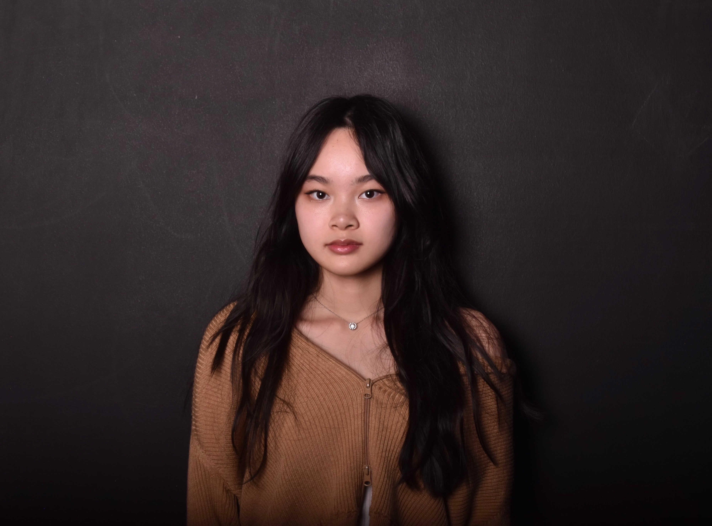

Skills & Interests
- HTML, CSS, and JavaScript
- UI/UX design and web accessibility
- Database systems and SQL

I am a Computer Science student at the University of Colorado Boulder with minors in Business and Creative Technology and Design. My interests include software development, accessibility, and information visualization. Experienced in building responsive, accessible web applications, integrating backend systems with dynamic front-end interfaces, and applying data analysis and modeling to drive insights. Quick to learn new technologies and committed to delivering reliable, data-informed, and user-centered solutions that bridge technology and real-world needs.
Bachelor of Arts in Computer Science - University of Colorado Boulder
Expected Graduation: May 2027